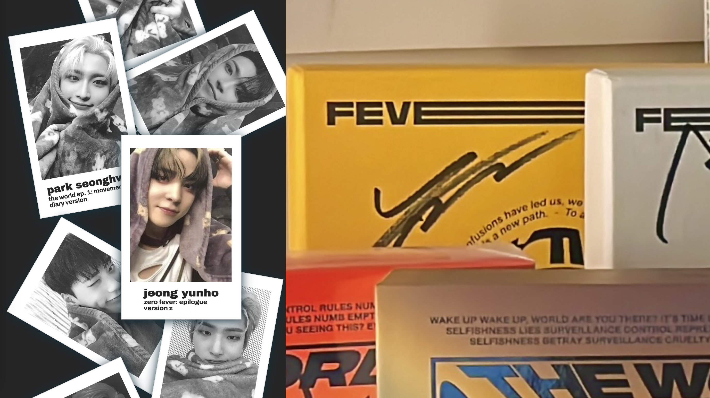

Summary of Key Findings
Issue 1: Lack of click affordance on polaroids leading to user confusion.
Issue 2: Difficulty in discerning signatures on the black album.
Pros: Intuitive interaction with polaroids; ease in identifying signed albums.
Tested Your Project:Natalie Soto and Gracie Johnson
Fit into Target Audience:
Natalie and Gracie are young music enthusiasts, unfamiliar with the band ATEEZ and my collection. They represent potential fans whom I aim to engage and share my passion for ATEEZ with.
Tasks Performed:
Task 1: Hover over the framed picture of Yeosang to reveal additional information.
Task 2: Identify which album Jeong Yunho signed by hovering over the respective polaroids.
Task 3: Determine the signer of the black album by examining the signature closely.
Common Problems:
Both users attempted to click on the polaroids, indicating a lack of clarity regarding interaction affordances.
Difficulty in discerning signatures on the black album due to visibility issues.
Pros:Both users intuitively hovered over the polaroids, suggesting an understanding of the website's functionality. No challenges encountered in identifying the signer of albums after interacting with polaroids.
Conclusion: This usability test highlights key findings from testing sessions with Natalie and Gracie. The observed issues, such as the lack of click affordance on polaroids and visibility problems with signatures, provide valuable insights for improving the user experience of your website. Addressing these issues will enhance user understanding and engagement, ultimately facilitating better interaction with my ATEEZ collection. Moving forward I will add functionality, specifically a click Event Listener, and other functions to make the site more engaging.
